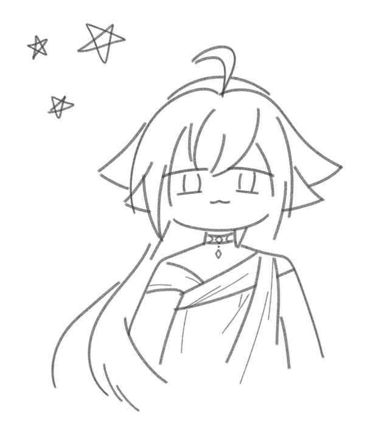

关于我
为了抑制连线世界对现实的干涉效应，mio 移除了本文的部分关键信息 ...

个人信息
mio /ˈmiː.o/
(Japanese: ミオ, Chinese: 米欧)
性别: female
年龄: ???
爱好: 动漫, 画画, 学日语, 偶尔也会写点代码
PGP: 下载 public_key.asc
语言:
miran
简体中文 (相对流利)
English
日本語 (下手)
喜欢的动漫
P.S. 宮崎駿 的作品基本上都看过，不过这里好像写不下了 ...
关于 sumiyo
haze ano haze he meyolakai, ga oomo nato, tera "meyolaka tayo".
世界和世界之间是有联系的，为了实现这个，你需要 “连接桥”。
2022 年 (sumiyo: 第 42706 个冬天)，跨界连接被证明是可行的，有意识体成功将 sumiyo 连接到其他世界。这种连接最初被明令禁止，但相关的技术却流传了出来。2023 年 2 月，mio 利用 Cloudflare 提供的技术支持，搭建了这座小型连接桥。
代码仓库: #sumiyo-git/site
2024 年 11 月，mio 注册了域名 sumiyo.link ( ".link" 比较低调 )
2025 年初，首轮优化结束，调整全部脚本的函数声明方式，彻底放弃了对 jQuery 库的依赖。4 月，这里遭受了一场小规模的后台爆破攻击 ...
11 月，mio 偷偷跑去学画画了（其实是被逼的），于是就有了这次大更新。